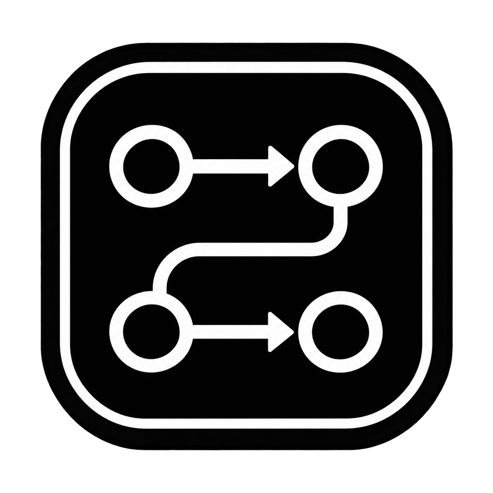

选择实例后，点击“获取御魂”读取当前角色的背包。
选择一条御魂查看详情
选择工作台的配色，立即应用到所有窗口。
主题自动保存，下次启动沿用。
设置内容浏览和实例列表的默认行为。
配置启动行为与调试记录。
为卡片提供命名、参数建议，并根据流程推荐待创建的节点。修改后自动保存，支持兼容 Chat Completions 的 AI 服务。
获取建议会将当前卡片、所列上下游节点、你填写的要求及勾选的模板图片发送给配置的服务商，可能产生 API 费用。可在建议窗口查看参考范围、关闭图片发送；发送图片需使用支持图片输入的模型。建议需由你确认选取；AI 不会自动执行工作流。
点击按键组合后按下新快捷键即可修改，修改立即生效并自动保存。
AutoFlow Studio · 工作流编辑与运行工具。